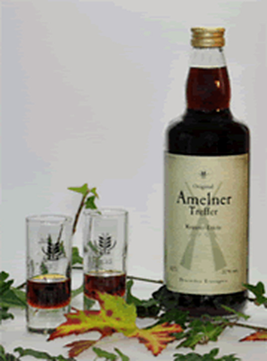
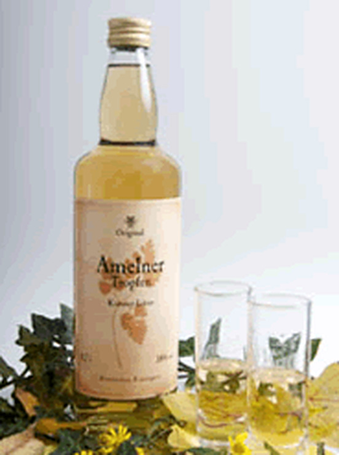

№ III — Erstens

Amelner Treffer
Kräuterlikör · Würzig & kräftig
Der Kräftige der beiden. Ausgesuchte Kräuter geben ihm seine unverwechselbare Note — der verlässliche Abschluss eines guten Essens.
Zum TrefferUnsere Liköre sind Genussmittel für Erwachsene.
Sind Sie mindestens 18 Jahre alt?
Dann müssen wir Sie leider vertrösten — bis zu Ihrem 18. Geburtstag.
Der Amelner Treffer und der Amelner Tropfen — zwei Kräuterliköre nach der Originalrezeptur von 1901. Kein Zeitgeist, kein Etikettenschwindel. Ein Stück Heimat im Glas.
Diese Seite ist wie ein Brennbuch aufgebaut: sechs Kapitel, die Sie in beliebiger Reihenfolge aufschlagen können. Wer es eilig hat, springt direkt zu den Likören.

Der Kräftige der beiden. Ausgesuchte Kräuter geben ihm seine unverwechselbare Note — der verlässliche Abschluss eines guten Essens.
Zum Treffer
Der Feine im Hause. Weich im Antrunk, klar im Abgang — aus Kräutern, Weizenfeindestillat und reinem Wasser.
Zum TropfenKein Warenkorb, keine Warteschleife. Sie rufen an oder schreiben — und Andreas Dering meldet sich persönlich zurück.